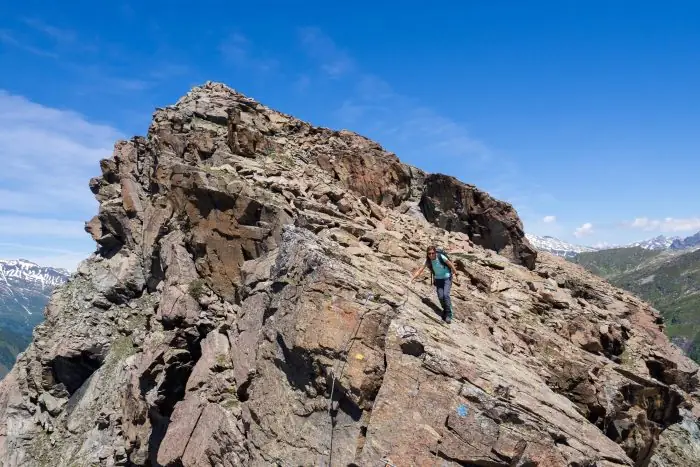
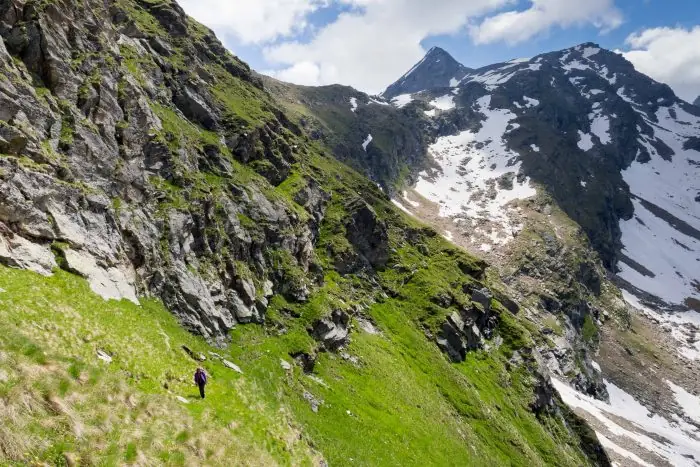
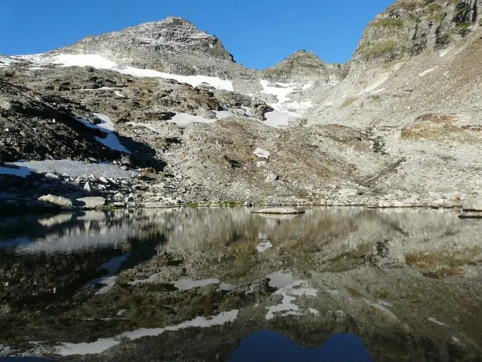
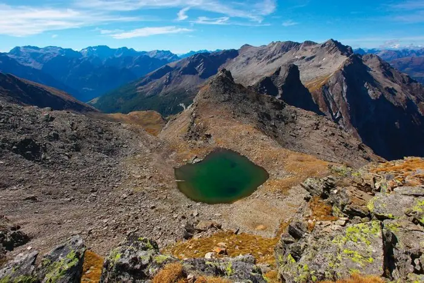

Haute route du Val Carassino
De Compietto à la cabane, par les hauteurs, via Sgiu, La Colma, Pinadee et Bresciana.
- Longueur
- 7,5 km
- Montée
- +1050 m
- Temps
- 5 h
- Difficulté
- T5
Cinq traversées vers d’autres cabanes, de la haute route du Val Carassino à la Via Crio.

Si vous avez plusieurs jours, ces itinéraires de randonnée et de montagne font découvrir des coins peu connus du Val Carassino. Ce ne sont pas des boucles : ils relient la cabane à d’autres cabanes. La haute route du Val Carassino se parcourt dans les deux sens et évite de parcourir deux fois le fond de la vallée si l’on part du Luzzone ou si l’on y arrive ; la traversée Cassimoi-Cassinello est une superbe course d’arête ; la Bocchetta di Fornee ouvre la voie vers Vals ; le passage vers Quarnei est un classique apprécié, aussi pour les familles avec enfants.
De Compietto à la cabane, par les hauteurs, via Sgiu, La Colma, Pinadee et Bresciana.

Le Pizzo Amianto et son ancien éboulement, les vires des moutons, les chamois, les bouquetins et l’aigle.

Les traces du glacier en recul, rochers et bouquetins, en direction de Vals.

Le glacier de la Bresciana et son recul, les moraines latérales, les roches moutonnées, le lac de Cadabi et la plaine de Quarnei.

Trois trois-mille sur l’une des étapes les plus exigeantes de la Via Crio.